Endorse three moves and the direction.
Budget and sequencing follow once the direction is agreed.
Trailing twelve months. Revenue says Plumbing. Gross profit says Air Con.
| Business unit | Revenue | Gross profit | GP % |
|---|---|---|---|
| Air Conditioning | $4.11m | $3.04m | 74.0% |
| Plumbing & Gas | $4.40m | $2.65m | 60.1% |
| Renovations | $0.38m | $0.14m | 35.9% |
| Roofing | $0.27m | $0.10m | 37.7% |
| Electrical + Solar | $0.10m | $0.07m | 67.3% |
Revenue: ServiceTitan report 295, invoiced, trailing 12 months to October 2026. Gross profit: job-level GP on completed jobs using Paul's method (revenue ex GST less labour at actual hours and burden rate, materials, subbies, recalls), trailing 12 months. Materials allocation is not fully audited, so GP is sound on labour and marginally generous on materials. It does not change the ranking.
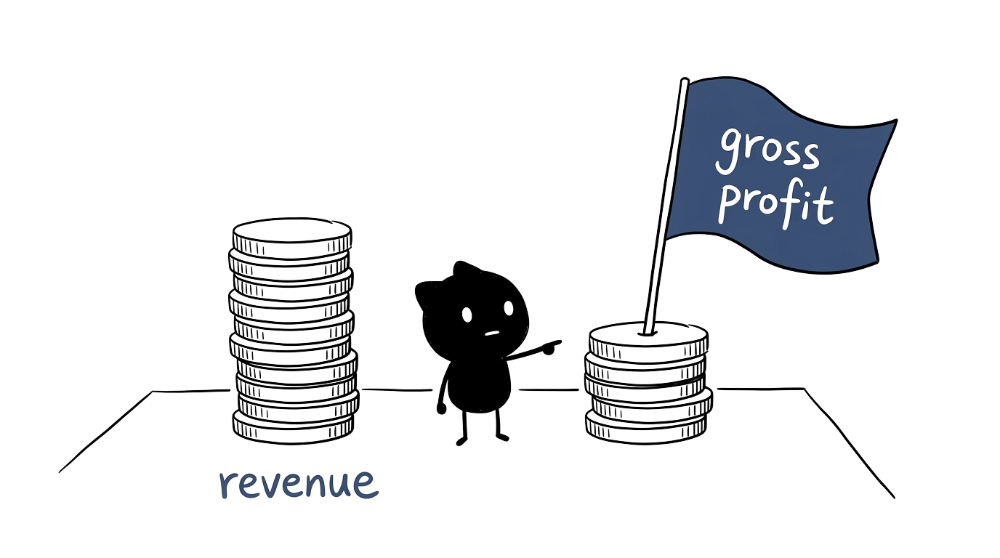
Our read from the live sites and the competitor study. To be confirmed by Paul.
Source: live per-brand sites and abatrades.com.au (site switcher), reviewed October 2026. Competitive reference: internal competitor study dated December 2024, approximately 21 months old at the time of this session. Treat the competitor detail as indicative.
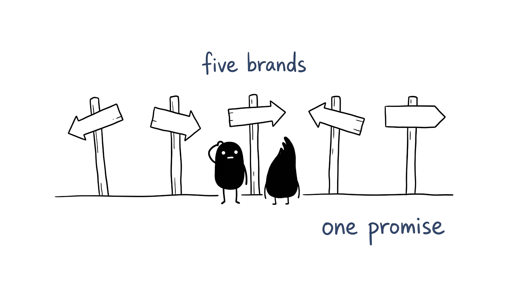
The only productised offer is membership, Gold and Platinum. Everything else is sold as a job, not as an outcome.
We sit above the cheapest and below the premium franchises, without saying why. Membership is our only real price architecture. Discounting is ad hoc.
Five websites, Google and the Google Business Profile. Absent where homeowners plan work: moving in, renovating, replacing, extending.
100% of tracked paid spend is Google search. Referrals and repeat work carry the rest, unmeasured and unmanaged.
Paid channel split from the group performance feed: $191,015 spent in the 90 days to 27 October 2026, all Google. Meta, Bing and Axon at zero.
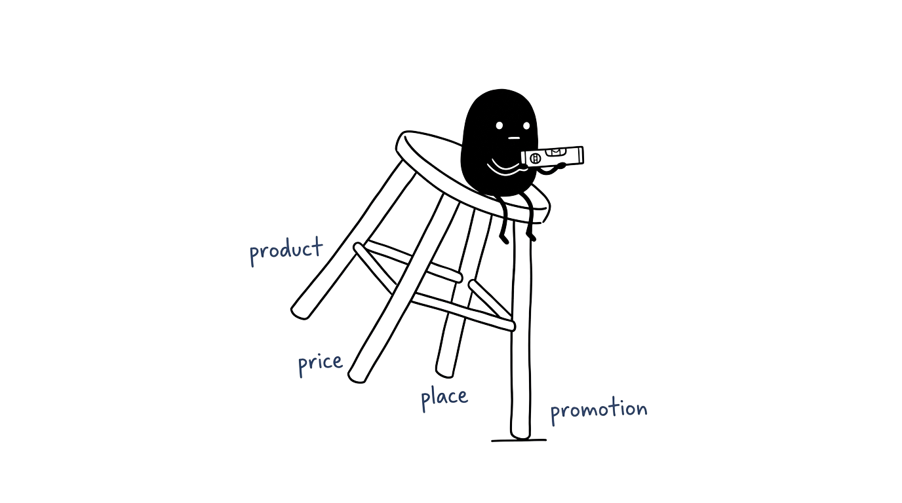
National franchises buy materials and media at a scale we cannot match. Competing on price means competing on their terms.
Being chosen for something specific, proved consistently, at a price the market accepts. This is where the brand promise does the work.
Michael Porter, Competitive Strategy. Neither generic strategy is currently declared, which is why the market treats us as one of several interchangeable local trades.
Harnish's second and third strata of strategy: the one promise you make, and the guarantee that proves you mean it. Domino's did not say "fast pizza". It said thirty minutes or it is free.
Accurate, memorable and completely unenforceable. No threshold, no clock, no remedy. If we fail it, nothing happens.
A promise with no guarantee cannot be verified, so it cannot be repeated, referred or defended. It behaves like decoration.
On time or a defined credit. Same-day attendance or the call-out is free. Fixed price quoted before work starts. Membership honoured without argument.
Verne Harnish, Scaling Up, 7 Strata of Strategy: brand promise and brand promise guarantee, carried into the One Page Strategic Plan.
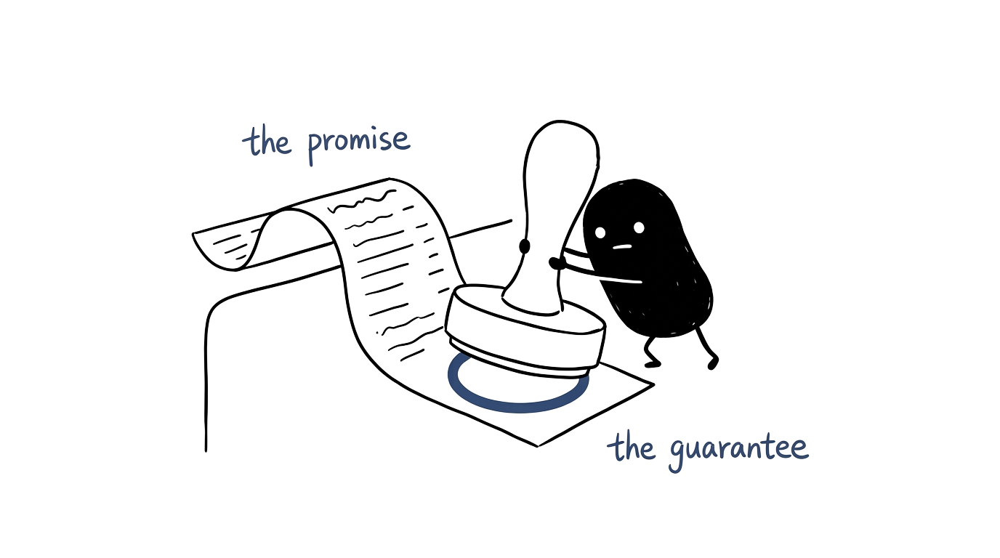
| Job type | Jobs | Gross profit | GP per job | GP % |
|---|---|---|---|---|
| Reverse cycle ducted install | 51 | $618k | $12,126 | 86.8% |
| Split system install | 57 | $236k | $4,143 | 79.4% |
| Gas hot water | 44 | $173k | $3,927 | 87.9% |
| Roofing install | 66 | $155k | $2,350 | 78.4% |
| Electric hot water | 24 | $149k | $6,225 | 86.9% |
| Drain replacement | 22 | $114k | $5,178 | 79.4% |
Job-level gross profit on completed jobs, 1 July to 14 October 2026: 2,508 jobs, $3.22m revenue, 97 percent matched to a ServiceTitan job type. Same GP method as slide 2. Membership status is not populated on job records, so member share of these jobs cannot be measured from this data.
Typically a 14 to 16 kW ducted change-over. About $14,000 of revenue and $12,126 of gross profit per job. They have already decided the old unit is not worth fixing again.
53 percent of ducted installs are attributed to the Air Conditioning organic website, against 6 percent from Google Maps. The decision starts on our site, not on an ad.
Not moving house, and not renovating. In our call sample renovation is mentioned in 2.6 percent of calls and moving in 0.9 percent. The trigger is a system at the end of its life, usually after one repair too many.
No installed-base record, no age on the equipment, no reminder at year 12. We meet this customer at the moment their system fails, which is the most expensive moment to win them.
Buyer profile modelled from job-level GP and job notes, 1 July to 14 October 2026, and the 3CX call sample of 21 to 25 September 2026. Source attribution: ServiceTitan job campaign, all 51 ducted installs tagged. Demographics and trigger timing are not yet measured; that is the jobs-to-be-done build awaiting sign-off.
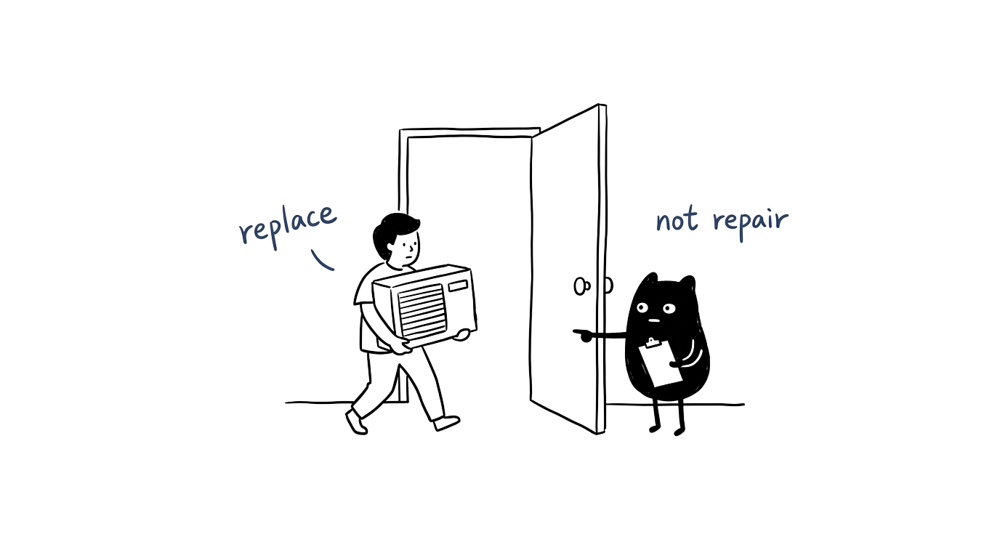
Air conditioning $301m, plumbing and hot water $186m, roofing $265m, electrical and solar $189m, renovations $152m. Includes repairs, service and replacement.
Four service lines with a repeatable offer and the crew to scale them. Renovations excluded: it is project work we take opportunistically, not a service line we can flood.
Anchored to the $13.0m target in the 2026-27 strategy session. That is 1.4 percent of SAM, against 1.0 percent on today's $9.26m.
All figures modelled from published penetration rates and replacement cycles, priced at current Adelaide market rates. Order of magnitude, not a forecast. ServiceTitan revenue for the "today" share: $9.26m, trailing 12 months. SOM is a capacity constraint, not a demand constraint: at 1.0 percent of SAM today, the market is not what limits us.
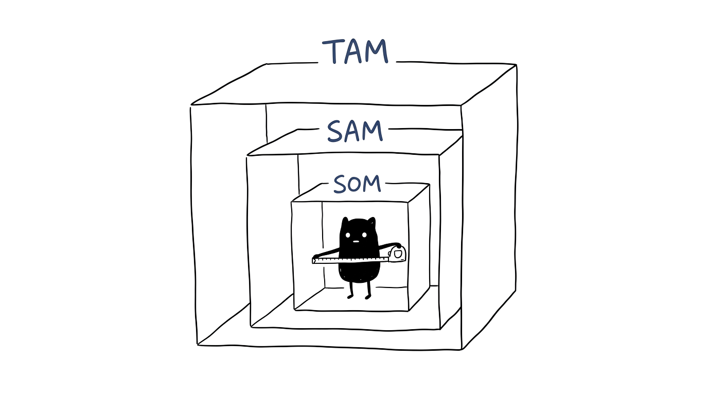
7,317 paying customers, November 2024 to October 2026, merged across business units. A further 2,730 customer records carried no revenue and are excluded. Band is a count of paid jobs in the window, so "one job" means one job in 24 months.
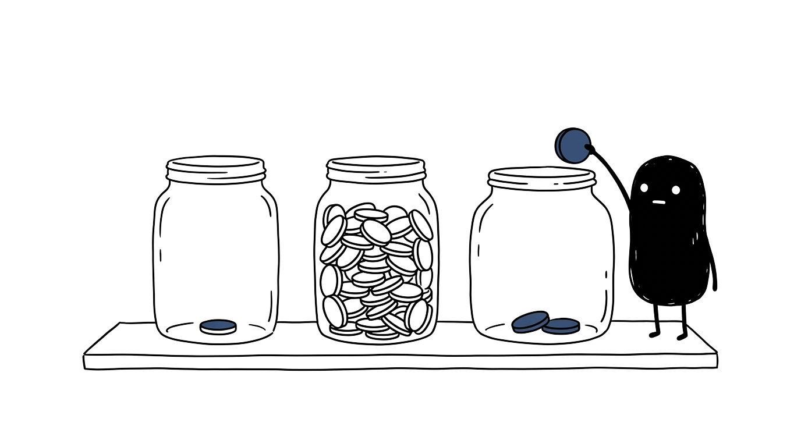
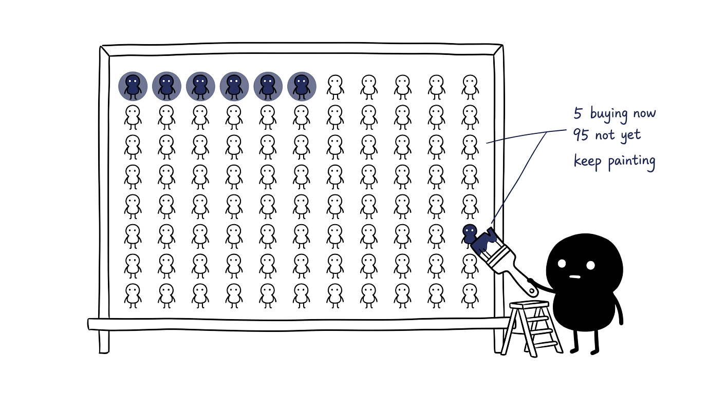
95:5 rule: at any moment roughly 5 percent of category buyers are in market, from Ehrenberg-Bass Institute research popularised by Google and Binet and Field. Dwelling base as per slide 9.
No brand media. We are not in the consideration set until the problem exists.
AbsentOrganic website and reviews. 53 percent of ducted installs start here.
Strong81.6 percent of genuine leads book, but $7.5m of estimates sit unsold and 6 percent are followed up.
Half49 percent buy once. 4.2 percent of members start a fresh job each half year.
Weak4.7 stars and 627 reviews, but no systematic ask, no referral offer, no tracking.
UnmanagedSources: ServiceTitan job and campaign attribution July to October 2026; CLV analysis November 2024 to October 2026; unsold estimate and cancellation figures from Paul's Low-Hanging Fruit pack, 22 October 2026.
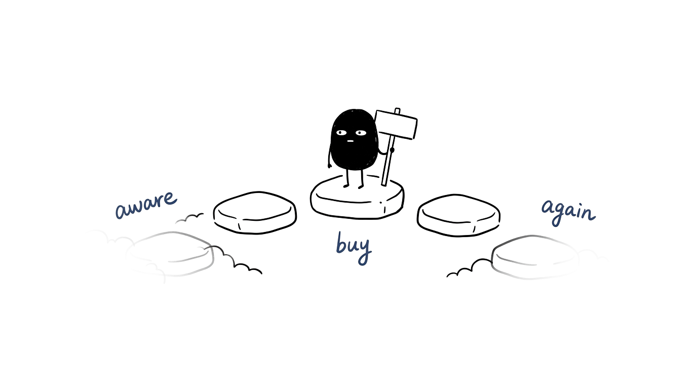
Marketing efficiency of 5.77 on Air Con, 4.92 on Roofing and 3.24 on Renovations. Fixed costs are already covered, so incremental revenue at these ratios still contributes. Plumbing at 8.92 is the one to hold, not grow.
$7.5m of unsold estimates, 300 after-hours leads a year, $620k sold then cancelled, and PMIs at five a month. No new media, just follow-up, availability and booking discipline.
Demand creation above the search line, plus local PR and a referral offer. One channel at a time, 90 days, measured on incremental jobs and blended MER.
Marketing efficiency ratio = revenue divided by ad spend, 90 days to 27 October 2026. Conversion opportunities from Paul's Low-Hanging Fruit pack, 22 October 2026: 1,113 unsold estimates worth $7,511,071 at middle option.
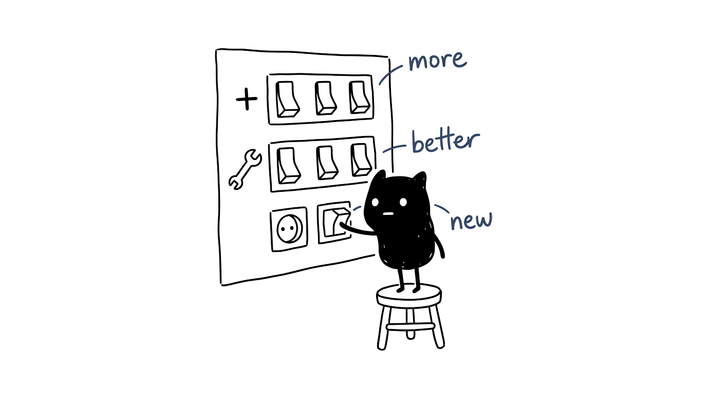
Spend goes up, enquiries follow, spend stops, silence. Cost per acquisition rises at every restart because the memory has decayed and the audience has to be bought again. Capacity planning is impossible.
A steady calendar of seasonal service, reminders, reviews and local content that keeps us present in the buying situations we currently miss. Predictable flow, falling acquisition cost over time.
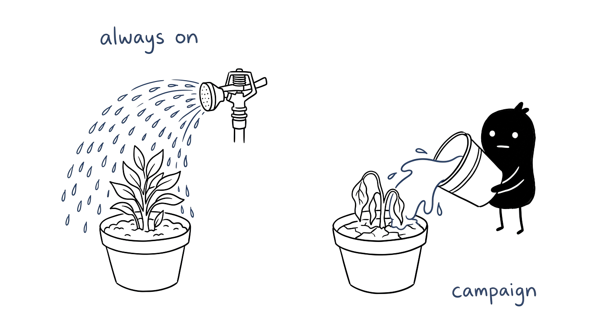
Paid spend from the group performance feed. Marketing and advertising figure from the 2026-27 Strategy Session, Xero, 12 months to 30 September 2026. Booking rate from ServiceTitan telecom, 7,360 inbound calls July to September 2026.
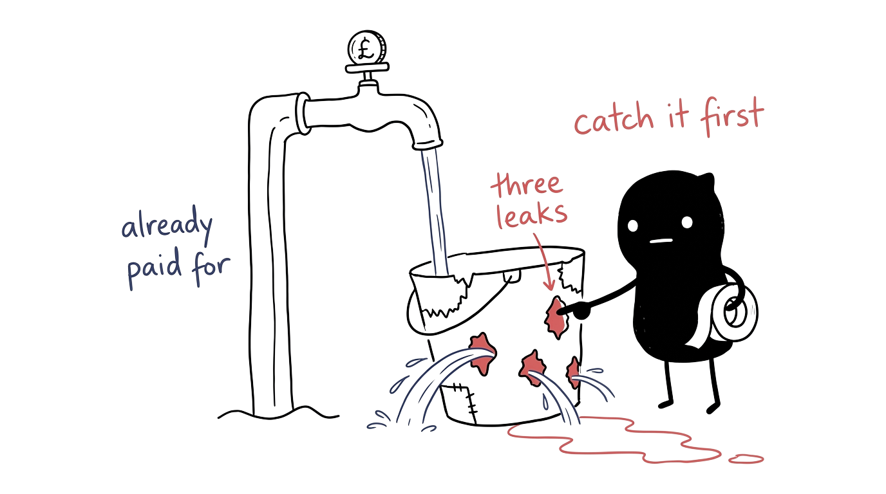
Unsold estimates, cancellations, after-hours and PMI figures from Paul's Low-Hanging Fruit pack, 22 October 2026. Call classification from ServiceTitan telecom, July to September 2026.
Seasonal cadence, brand presence, owned email and SMS, review engine, suburb content, replacement reminders. A system, not a campaign.
Add Meta, Reddit and radio alongside Google. One at a time, 90 days each, with a read before the next. Google is held, never cut.
A fixed-price ducted and hot water replacement offer with finance, a stated install window and the brand guarantee, backed by comparison content.
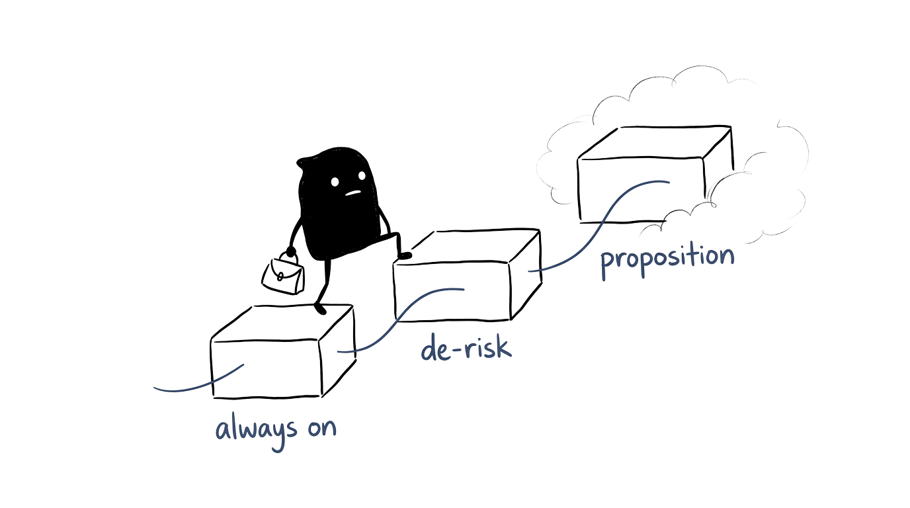
Four definitions coexist and disagree by more than thirty points. This deck ranks on job-level GP, Paul's method: revenue ex GST less labour at actual working and driving hours at each technician's burden rate, less materials, subbies and recalls, on completed jobs. The monthly Xero view runs at 37 to 43 percent because it carries advertising, fleet, fuel and card fees below the gross profit line. The performance dashboard is a third, book-based view at roughly 37 percent of revenue. None of them is wrong, they answer different questions. The ranking is stable under all four.
TAM $1.09b. Total annual residential spend across the five categories in Greater Adelaide, including repair, service and replacement. Commercial and new-build work is excluded, so TAM is conservative.
SAM $941m. TAM less renovations ($152m), which is project work we take opportunistically rather than a service line we can scale with the current crew mix.
SOM $13.0m. The FY27 revenue target from the 2026-27 Strategy Session, 1.4 percent of SAM. It is a capacity and execution constraint, not a demand constraint: at 1.0 percent share today, the market is not what limits us.
Dwellings: 593,881 private dwellings in Greater Adelaide at the 2021 census, grown 1.2 percent a year to approximately 630,000 in 2026.
Air conditioning: 85 percent penetration, 536,000 homes, replacement cycle 15 years, 35,700 replacements a year at $6,700 = $239m. Service at $230 every two years = $62m. Total $301m.
Plumbing and hot water: 75 percent of homes with a storage or heat pump system, replaced every 12 years, 39,400 units at $2,200 = $87m. Repairs: 35 percent of homes call a plumber each year at $450 = $99m. Total $186m.
Roofing: 70 percent of homes with a replaceable roof, 30 year cycle, 14,700 roofs at $18,000 = $265m.
Electrical and solar: 50 percent of SA houses with solar, 15 year replacement cycle, 21,000 systems at $9,000 = $189m.
Renovations: $677m of permit-approved SA renovations, 75 percent in Greater Adelaide, 30 percent bathroom and kitchen = $152m.
Each line is an order-of-magnitude estimate built to show scale and relative share, not a forecast. The penetration rates and replacement cycles are the assumptions to challenge first.
7,317 paying customers over 24 months, merged across business units. Light is one paid job in the window, medium is two to three, heavy is four or more. A further 2,730 customer records carried no revenue and are excluded, and ServiceTitan job history begins at the November 2024 migration, so the bands are a floor rather than a lifetime view.
The job table on slide 7 covers completed jobs from 1 July to 14 October 2026: 2,508 jobs, $3.22m revenue, $2.42m gross profit, 97 percent matched to a ServiceTitan job type. It is a 15 week window, not a year, so treat per-job figures as current run rates rather than annual totals. Quote visits are booked as their own job types: 1,756 of them in the window carried a net cost of $62k. They are the cost of selling, not a loss-making service line, and they are excluded from the install table.
Materials allocation is not fully audited, so job-level GP is sound on labour and marginally generous on materials. Membership status is not populated on job records. Meta has no daily spend feed wired for the service brands, so "zero" means zero in the tracked accounts. The competitor study is dated December 2024.
Michael Porter, Competitive Strategy. Verne Harnish, Scaling Up, 7 Strata of Strategy. Byron Sharp, How Brands Grow, and the Ehrenberg-Bass Institute. Binet and Field, The Long and the Short of It. Alex Hormozi's value equation informed the guarantee framing. Illustrations use the Ian Xiaohei style system (MIT, credited in the vault).
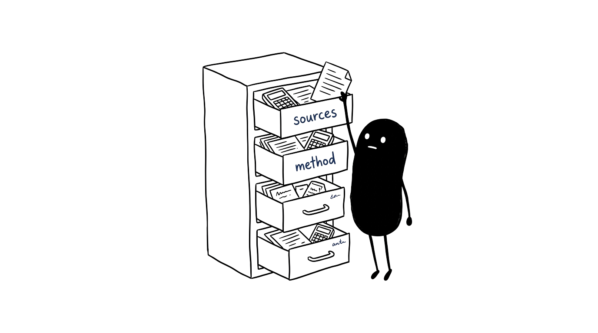